株式会社インフォクラフト代表取締役、IzumoBASE株式会社代表取締役。東京工業高等専門学校情報工学科を卒業したのち、電気通信大学情報工学科を卒業。東京大学大学院情報理工学系研究科にて創造情報学を専攻。博士（情報理工学）。専門はソフトウェアデザイン、システムソフトウェア。DecasやDokanを含むプロジェクト「データ管理システム」は情報処理推進機構(IPA) 2006年度下期 未踏ソフトウェア創造事業(ユース)に採択され、スーパークリエータの認定を受ける。
「未踏ジュニア」はどのようにプロジェクト化されたのか
プロジェクト発生から成長までのプロセスとは？
未踏社団発の代表的なプロジェクトである「未踏ジュニア」。この未踏ジュニアプロジェクトがどのような想いから生まれ、立ち上がり、プロジェクトとして成長していったのか、立案者である荒川理事に語ってもらいました。
未踏ジュニアプロジェクトが立ち上がったきっかけは？
未踏ジュニアは、未踏OBである鵜飼さんと立案したプロジェクトです。鵜飼さんとは未踏会議・ナイトの運営や、未踏研究会、プログラミング教育WGなど、複数のイベントで協働することが多かったことから親交を深めていました。
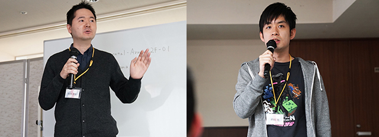
▲未踏ジュニアプロジェクトを立ち上げた荒川理事と未踏ジュニア代表・鵜飼佑さん
2015年の夏に立ち上げた「未踏研究会」のキックオフイベントの後、打ち上げを兼ねた懇親会があったんです。そこで、若い世代に未踏のような成長機会を与える場を作りたいという「未踏ジュニア」のアイデアを話しました。同じテーブルには、西尾さんや安川さん、鈴木さんもいて、各々が抱いていたアイデアを共有し合い、盛り上がった記憶があります。
プログラミングのスキルを磨いてほしいというのはもちろんですが、自分のアイデアをプロダクトとして作りこみ、実際にユーザーに使ってもらう経験をしてもらいたい。優秀な小中高生に未踏のようなメンタリング・開発支援・アウトプットの機会を提供したいと、みんなの想いを語り合いました。
また、プロジェクトがスタートしてからも、未踏ジュニアの取り組みや進捗状況に関する報告をワーキンググループ会で行い、賛同者・協力者を集めていきました。
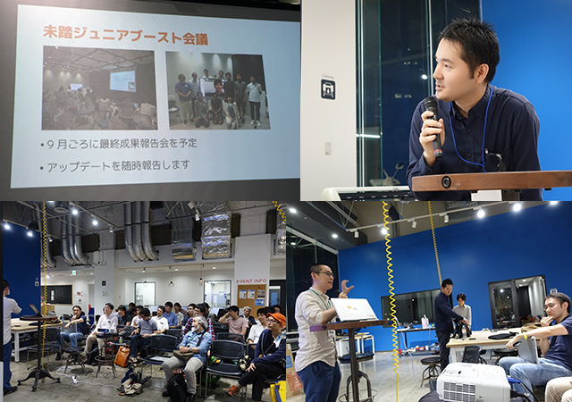
▲未踏研究会#3で未踏ジュニアプロジェクトについて報告する様子
未踏ジュニアをどうプロジェクト化したのか？
2016年初頭には、「未踏ジュニア2016」がパイロットプログラムとして実施されることが決定しました。初年度予算は10万円で4プロジェクトの実施と、今よりは少額ではあるものの、ワーキンググループや研究会と比較すると大きな金額で予算化されたと思います。
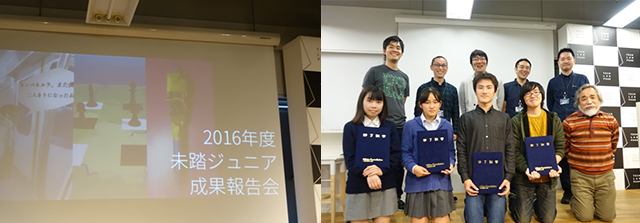
▲2016年度未踏ジュニア成果報告会の様子
同年10月、当時法人会員だったリクルート社から未踏ジュニアの取り組みに高い関心を示してもらうことができ、江副記念財団（現江副記念リクルート財団）と未踏との提携模索がスタートしました。
その江副記念財団の助成を受け、合宿スタイルの「未踏ジュニアキャンプ」が立案され、同時にPMの増員、予算増額を図った「未踏ジュニア2017」の本格化も動き出しました。
同年12月には小中高、高専生を対象にした、未踏OBによる講演会・未踏/U-22プロコン/未踏ジュニアの説明会を、UUUM株式会社のイベントスペースにて開催し、翌年の7月から11月にかけて「未踏ジュニアキャンプ2017」と「未踏ジュニア2017」を実施することを発表しました。
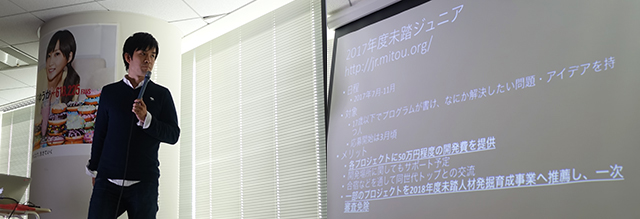
▲UUUM株式会社の会場にて、2017年度未踏ジュニアについて発表する鵜飼氏
未踏ジュニアプロジェクトの拡大と成長過程は？
2017年度からは、各プロジェクトに50万円程度の開発費が提供され、2018年度未踏人材の一次審査免除など、新たなメリットが加わり、プロジェクト規模が拡大していきます。
2017年度は、未踏ジュニアキャンプを3日間かけて実施しました。当キャンプは江副記念財団の助成事業を獲得して資金を工面し、未踏ジュニア2017は未踏社団最大の300万円超（支出の1/3レベル）の支出プロジェクトとなりました。
キャンプ期間中は、プロダクトのプレゼンを行ったり、グループに分かれてメンターとメンバーが議論を交わしたり、OB/OGや豪華ゲストによる特別講演を聴いたりなど、小中高生クリエイターの成長を促すプログラムが展開されています。
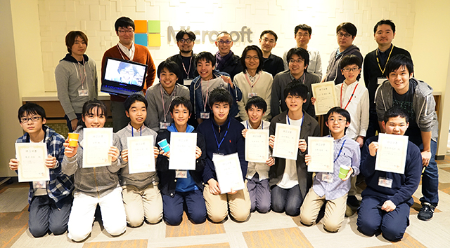
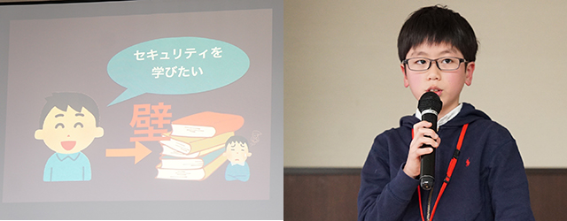
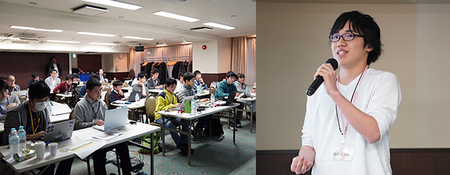
▲プレゼンを行う小中高生クリエイター（2017年度未踏ジュニアキャンプ）
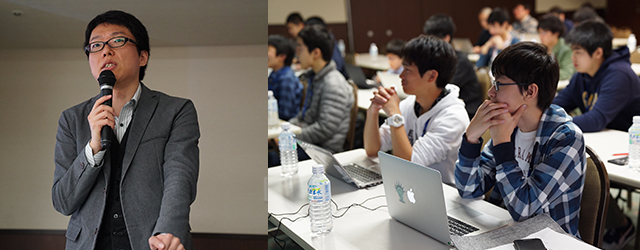
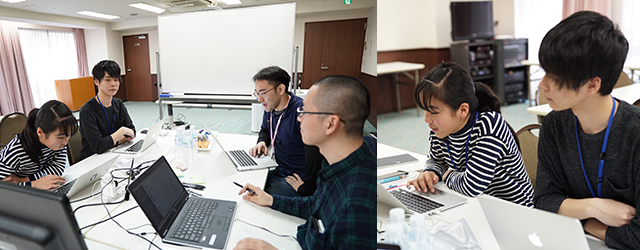
▲OB/OGやゲストによる講演を聴いたり、グループに分かれOB/OGと議論を交わしたりする
クリエイターたち（2017年度未踏ジュニアキャンプ）
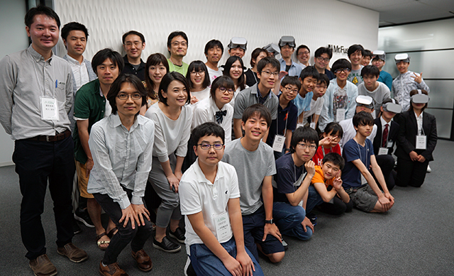
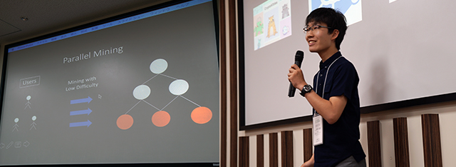
▲2018年度未踏ジュニアキャンプの様子
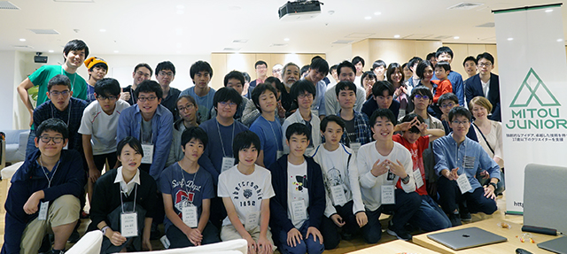
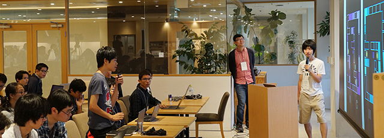
▲2019年度未踏ジュニアキャンプの様子
2018年度の未踏ジュニアクリエータで、LINE BOOT AWARDSグランプリ・学生賞を受賞した西村惟さんをはじめ、高度人材の輩出も注目を集めています。
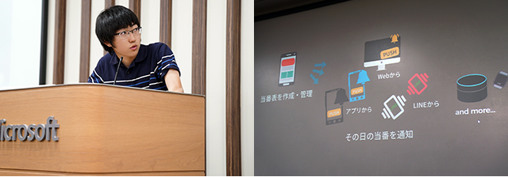
▲2018年度未踏ジュニアキャンプで、LINE BOTアプリ「Toubans!」をプレゼンする西村さん
これらのプロジェクトが江副記念財団から高い評価を獲得し、同財団は安定的なスポンサーとなります。その後、PM増員、大学推薦枠の獲得、広報活動の拡充などを経て、社会的な認知も拡大を続けており、2020年現在では、スポンサー7社（ゴールド2社、シルバー3社、ブロンズ2社）、機材・教材提供6社、文部科学省・経済産業省後援、協力団体8団体のスポンサーを獲得しています。
このように、未踏ジュニアプロジェクトは若い世代の優秀人材に育成の場とチャンスを与えたいというアイデアと、共感するメンバーとの雑談というスモールスタートから生まれました。
未踏社団では社会課題に対する情熱とアイデアのある高度IT人材を応援しています。アイデアのある方はお気軽にご相談ください。

荒川 淳平
リンク一覧
-
未踏ジュニアとは（https://jr.mitou.org/about）